Токио · Кинситё · сэнто
Koganeyu: старая баня Кинситё с сауной, пивом и фреской во всю стену
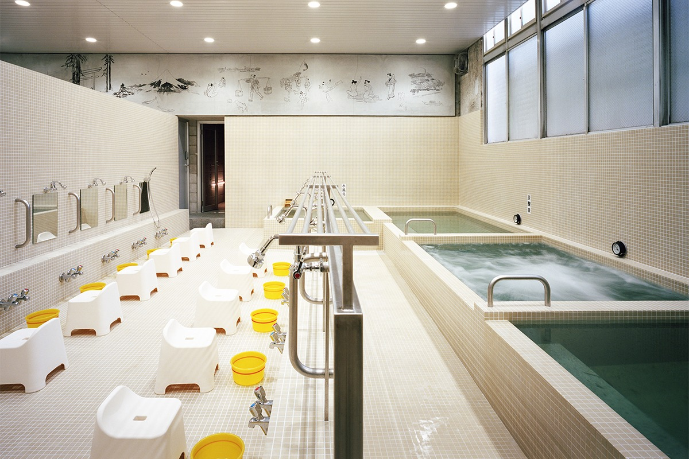
Городских бань в Токио становится всё меньше, а в квартале у станции Кинситё старый сэнто Koganeyu оказался одним из самых оживлённых мест района. После перестройки 2020 года сюда идут и соседи, и любители сауны со всего города, и путешественники.
История
Баня, которую спасли всем миром
Сэнто, общественная баня, в Японии больше чем место, где моются. Такие бани распространились среди горожан ещё в эпоху Эдо и веками оставались местом встречи соседей. Когда ванна появилась почти в каждой квартире, бани стали закрываться одна за другой. Зато в больших городах появились бани новой волны: традиционный уклад в них сохранён, а пространство переделано смело и по-современному. Начало им положила Koganeyu в Кинситё, квартале в районе Сумида на востоке Токио.
Баня открылась в 1932 году, и у неё есть «сестра», старая баня в соседнем Осиагэ. В феврале 2020 года здание закрыли на ремонт. Из-за пандемии работы пришлось приостановить, и в конце мая баня объявила сбор денег в интернете. Цель в 3 млн иен собрали за пять дней, а всего пришло 6,5 млн. В августе 2020 года Koganeyu открылась снова.
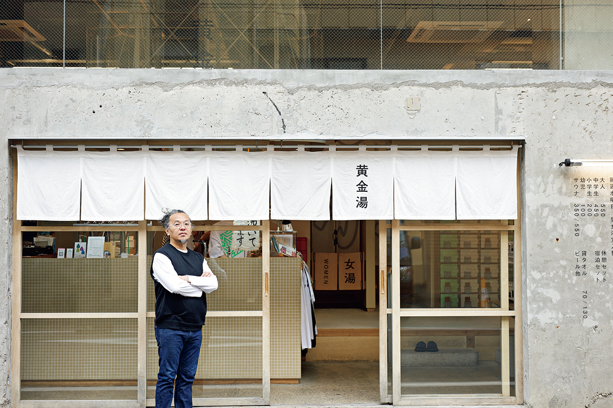
Проект готовили полтора года. Общим продюсером стала художница, а интерьеры придумал архитектор Дзё Нагасака из бюро Schemata Architects, автор кофеен Blue Bottle Coffee.
Архитектура
«Невидимая застройка»
Свой подход Нагасака называет «невидимой застройкой». Вместо огромного торгового центра, где всё видно на табло с планом этажей, он перестраивает старые здания, уже вросшие в улицу, и делает это по одному, в разных точках квартала.
«Так складывается город, который невозможно предсказать. Люди переходят от места к месту, и появляется новая жизнь. Мне хочется, чтобы мои здания помогали городу, по которому интересно бродить: свернёшь в переулок просто потому, что там что-то любопытное»
архитектор Дзё Нагасака
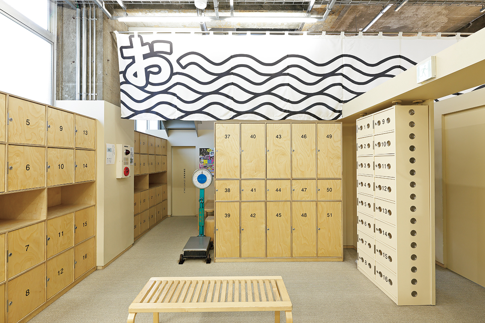
Тема всей бани в том, чтобы мужская и женская половины чувствовали друг друга. В старых сэнто мужчины и женщины перекликались через стену: «Эй!». Этот возглас современный художник превратил в огромный занавес, который проходит через обе раздевалки. Фреску над бассейнами нарисовала художница манги: это одна история в духе свитка, она тянется через стену и обе половины, а изображена на ней Фудзи. Через перегородку, открытую сверху, проходит и один длинный поручень: друг друга не видно, но держишься за одну и ту же перекладину.
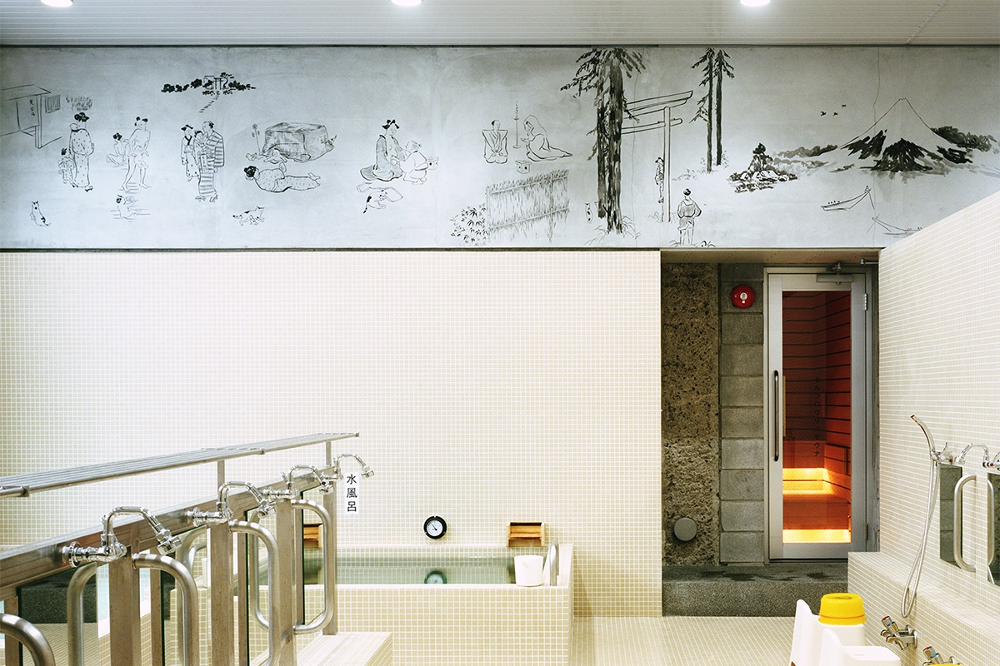
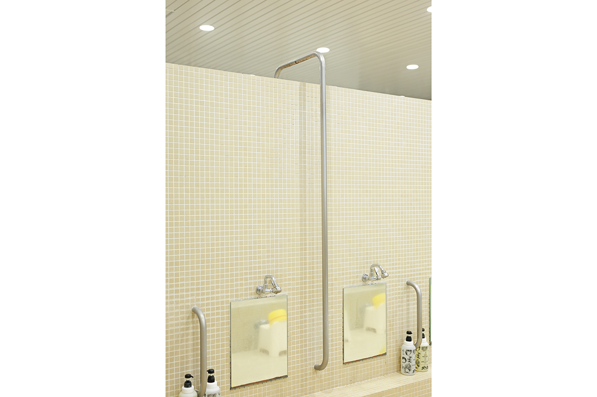
Нагасака занимается банями с 2018 года, когда спроектировал в Токио капсульный отель с настоящей финской сауной, ещё до моды на сауны. Горячие источники и сэнто он называет «дышащей архитектурой», открытой городу.
«В общественных банях на курортах даже зимой чуть приоткрыты окна. Местные и туристы в юкате заходят и выходят без всяких границ, а пар и запах серы плывут по улицам. Так чувствуешь живое дыхание места. В Киносаки весь город устроен как одна гостиница с горячими источниками, в Беппу горячая вода бьёт повсюду, и у местных своя спокойная культура бань. Открытая, дышащая архитектура сливается с местом, и получается город со своим лицом»
архитектор Дзё Нагасака
Бассейны
Три температуры и мягкая вода
Старые бассейны при перестройке оставили на месте. Их три, и найти себе воду по вкусу может каждый, от маленьких детей до любителей очень горячей. В 2025 году это были горячий бассейн 43–44 °C со струями, которые разминают тело, бассейн на 40 °C с травяным настоем, который меняется каждый день, и бассейн на 36 °C с высоким содержанием углекислого газа. Такую воду считают полезной при высоком давлении и бессоннице и для кожи. Вода во всех бассейнах мягкая. В 2020 году в баню пускали гостей с татуировками, а по средам мужская и женская половины менялись местами.
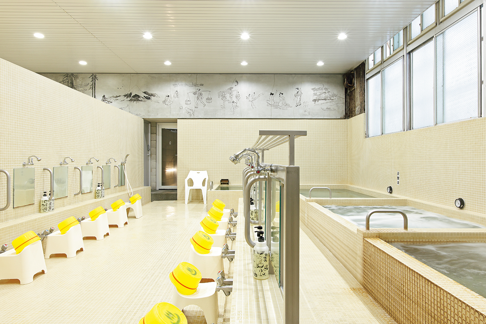
Большой объём воды и её давление прогревают до самых костей, чего не добиться в домашней ванне. Если по очереди погружаться в бассейны разной температуры, кровь бежит быстрее, а усталость уходит.
Сауна
Пар, ледяная вода и небо над головой
Нового в Koganeyu добавили немного, но точно: по сауне на каждой половине. Их устроили в старом машинном отделении, которым давно не пользовались. Мужская сауна отделана пористым камнем бакухансэки и японской хибой, пар здесь подаётся автоматически. Женская сауна поменьше, она обшита японским кипарисом хиноки, и камни поливают сами. Жар и влажность в ней ничуть не слабее.
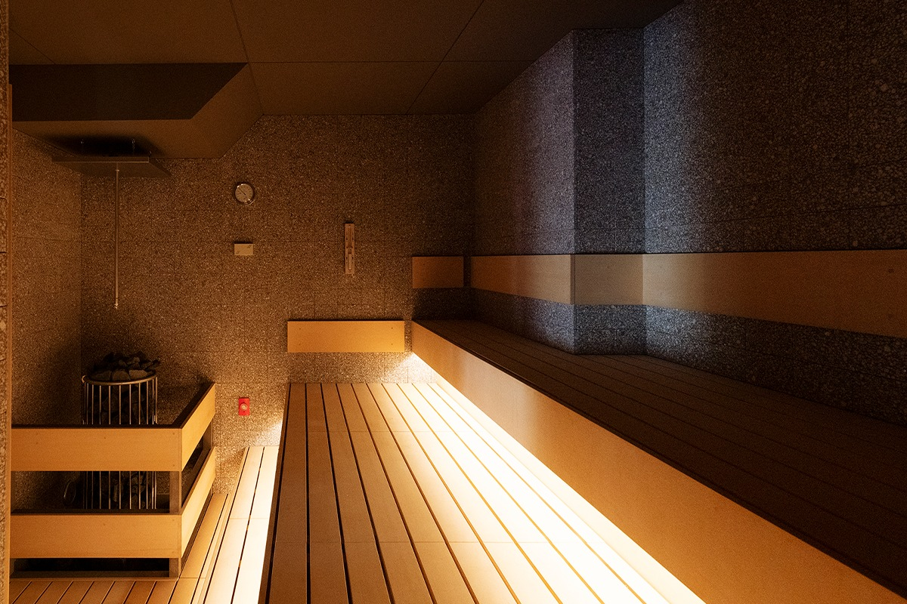
Финны веками поливают раскалённые камни водой, чтобы поднять пар и сильнее пропотеть. В Японии этот приём называют «лоурю», от финского слова «лёйлю».
Прямо за дверью сауны ждёт большая купель с очень мягкой водой. Её охлаждают до 13 °C, а глубина в 2020 году была 90 см. Есть и купель потеплее, на 18–20 °C. После купели выходят во двор, где раньше складывали старые стройматериалы. Там стоят стулья, видно небо и чувствуется ветер.
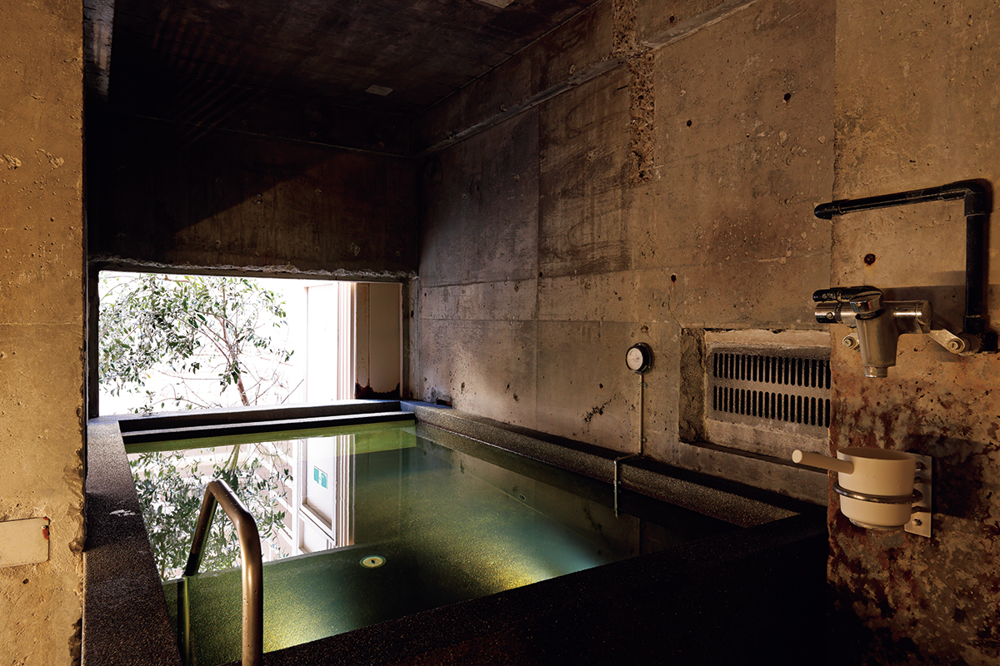
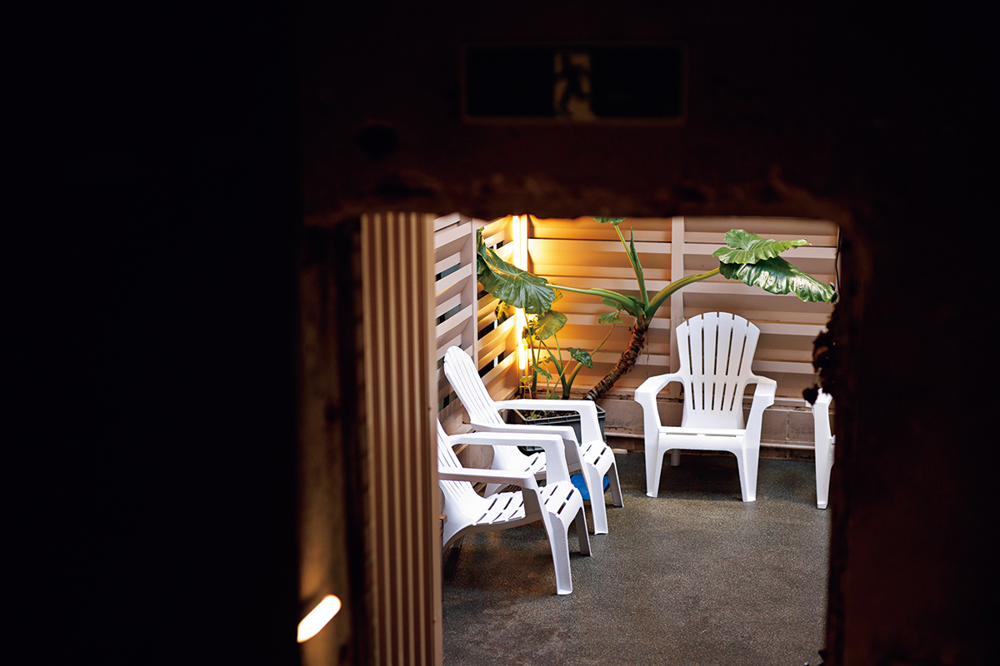
Бар
Пиво после бани
У входа вместо обычной стойки банщика стоит бар. Его дизайн, говорят, подсказали бумажные фонари тётин. Здесь наливают собственное пиво бани и молоко, есть диджейский пульт. В 2020 году бокал пива Koganeyu стоил 600 иен.
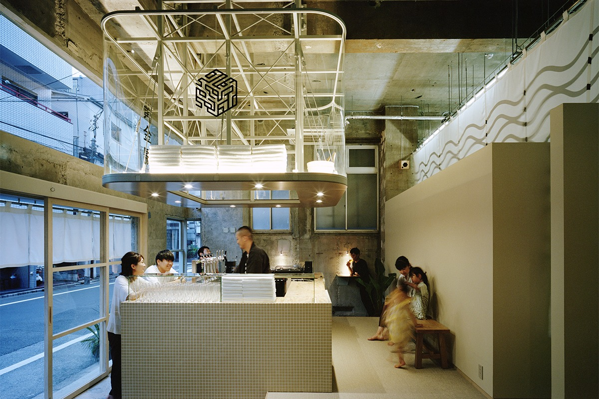
Кроме бара на первом этаже есть уголок, где кофе заваривают сами, и кафе «Коганэ китчин» с разной едой. Ещё до ремонта в бане устраивали ярмарки пластинок. Наверху есть хостел с общими спальнями, так что после бани и сауны можно сразу лечь спать.
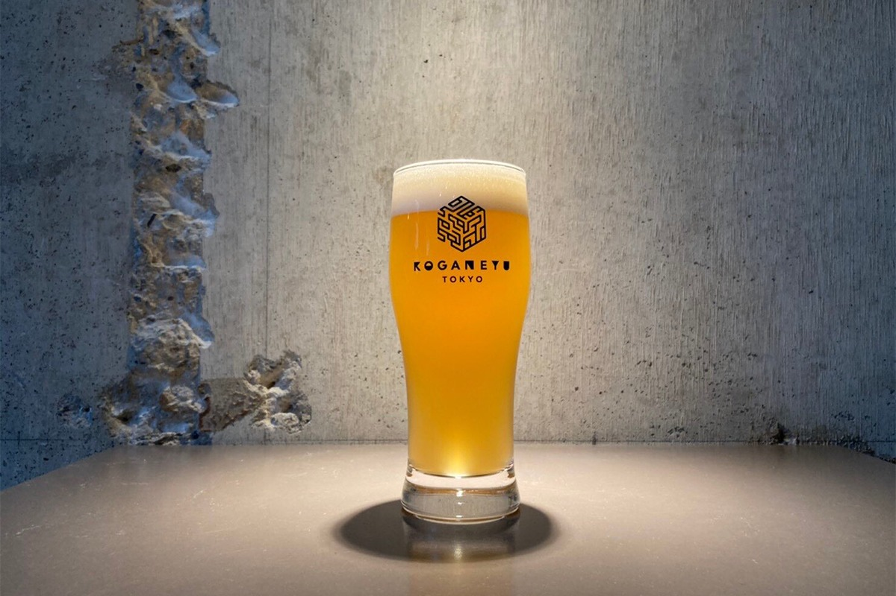
К старым соседям, которые ходят сюда годами, добавились молодёжь и пары, которые раньше в сэнто не бывали, любители сауны из других районов и иностранные путешественники.
«После работы ужинаешь, а перед сном заходишь в баню и лежишь в большой ванне. Жизнь от этого становится чуточку богаче. Хочется, чтобы для нового поколения баня перед сном стала одним из способов хорошо провести вечер»
архитектор Дзё Нагасака
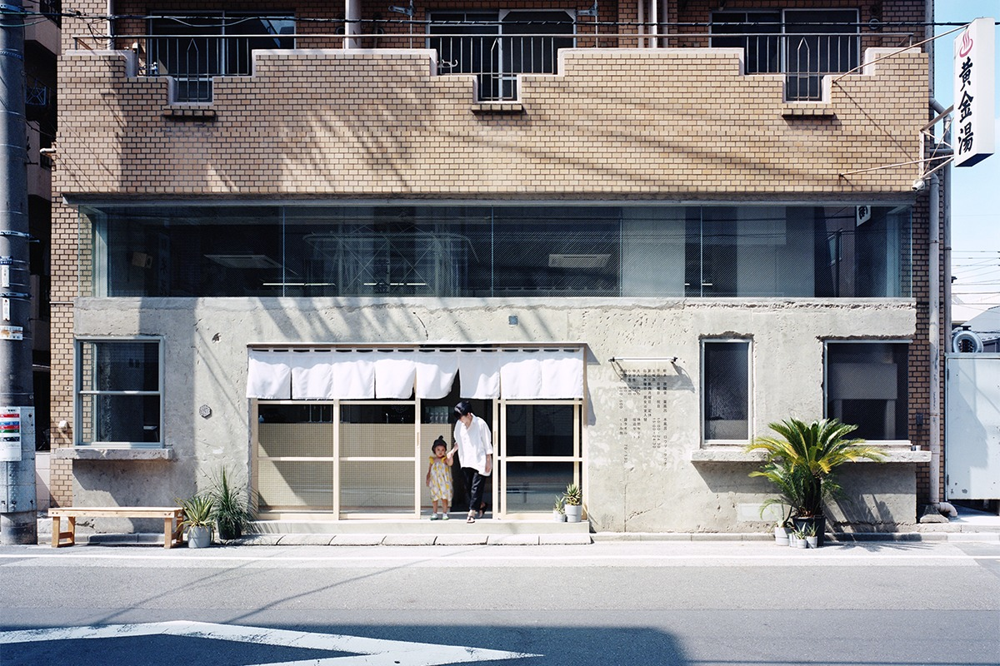
Koganeyu
- Адрес
- Токио, район Сумида, Тайхэй, 4-14-6
- Телефон
- +81 3-3622-5009
- Часы работы
- 6:00–9:00, 11:00–24:30 (в субботу днём с 15:00)
- Выходные
- второй и четвёртый понедельник месяца
- Цены / Вход
- взрослые 550 иен, школьники средних классов 450 иен, младших классов 200 иен, дошкольники 100 иен (90 минут); сауна в будни для мужчин +550 иен, для женщин +350 иен, в субботу, воскресенье и праздники для мужчин +600 иен, для женщин +400 иен (120 минут)
- Как добраться
- 6 минут пешком от северного выхода станции JR Кинситё; парковки нет
- Сайт
- koganeyu.com
Фото: Юрика Коно, Норихито Судзуки.